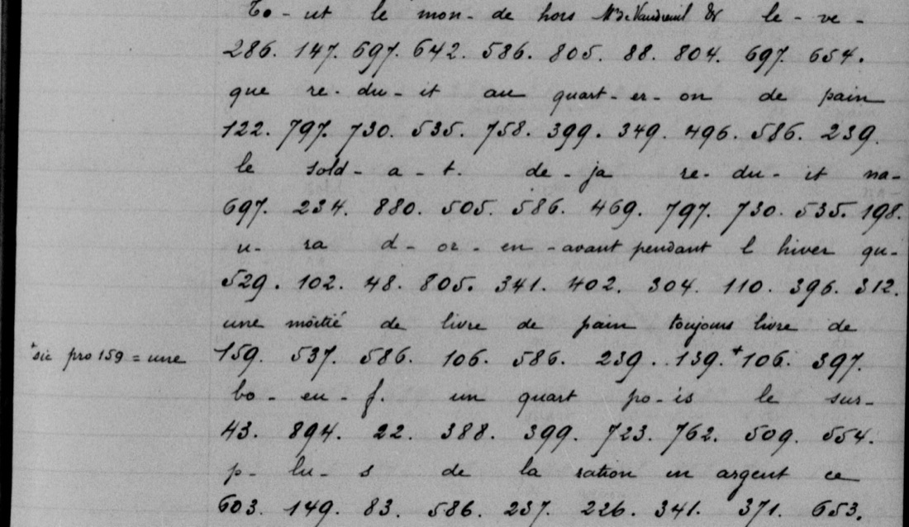

At a glanceRead from existing decipherment · partial (637 of 648 words unmarked)
- The letter
- Montcalm to the war minister Paulmy, Québec, 4 November 1757, with an annexed cipher sheet. Only the cipher is given here: every cipher extract of the letter (610 code groups) and the whole sheet (306 groups). The clear parts of the letter are not transcribed.
- Where
- Service historique de la Défense (Vincennes), GR A1 3457, pièces 179 and 180, seen only in the copy made for the Public Archives of Canada: Library and Archives Canada, MG4 B1 série A1, reel C-12578 (the cipher on copy pp. 505–506, 510–513 and 517–518).
- What it says
- An officer’s verdict that the body of Louisbourg’s fortress “ne vaut rien”; bread cut to a quarter-pound for all but Vaudreuil and the bishop, cod and horse in place of beef; Vaudreuil and Bigot asking Montcalm, “between you and me”, to press the King; and a plan to meet an English landing between the Montmorency falls and the Saint-Charles with redoubts, lines and cannon.
- The cipher
- A numerical code, our working name “code W”: numbers for letters, syllables, words and names, in no alphabetical order. Its key sheet of the time was not found.
- How it was transcribed
- The copy carries the decipherment of the time between the lines. It was transcribed group by group, edited into French sentences and translated, and 318 code values were indexed from the same pairs. This is not an independent decipherment.
- Still open
- Two numbers whose middle digit cannot be settled on the copy (p. 506, 670 or 690; p. 518, 2?5) and a few values that conflict in the copy. The French originals at Vincennes were not seen.
- Credit
- The anonymous clerks who deciphered the letter at the time. Transcription, code index and translation by Andrew Beling, with AI agents; reading review by Brice Dudout, assisted by an AI model.
01 What the edition left out
Montcalm’s letter of 4 November 1757 to Paulmy is printed in English in the Documents relative to the Colonial History of the State of New-York, volume X (1858), pp. 669–671. That edition omits the cipher paragraphs (“a paragraph in cipher, which is omitted”), and the cipher sheet annexed to the letter is absent from it too.
The cipher passages of the letter give, first, an officer’s report on Louisbourg: a landing is easy, the front to guard is long, “le corps de la place ne vaut rien” (the body of the place is worthless), the covered way and the harbour entrance can be defended, and a thousand more men are needed. Then the food: everyone except Vaudreuil and the bishop is cut to a quarter-pound of bread; through the winter the soldier gets half a pound of bread, a pound of beef, a quarter of peas and the rest in money, and out of every eight days two of cod and two of horse instead of beef, “comme à Prague”. Montcalm says he cut his own table and would have horse eaten on the days it was issued; Bigot hesitated, then did the same. Vaudreuil and Bigot asked him, “de vous à moi”, to write strongly and to beg the minister to speak of it to the King. The extract ends: without the provisions he took from the English, the country would have been lost.

02 The plan for Québec
The annexed sheet (pièce 180) opens: Québec “sera toujours, quoique l’on y fasse, une mauvaise place”, and the Saint Lawrence is hard to navigate. A landing on the south shore is nothing to fear; on the north shore there are nine places to land but too many obstacles as far as the Montmorency falls; so the English are left to land between the falls and the Saint-Charles, a stretch of 3,600 toises (about 7 km). There they are to be met with redoubts from the falls and lines along the little river, covered by cannon on the heights of Québec; if they try to turn the lines they meet the woods, with many Canadians and Indians. Short of food, the army will take the field late: in June toward Lydius (Fort Edward), “ne fût-ce que pour favoriser des courses”, and an expedition of Indians and Canadians toward Corlar; when the food arrives, a march to Fort Duquesne in September if it has been taken. “Je me charge de l’expédition; tous les sauvages me suivroient.”
03 What came after
According to the Dictionary of Canadian Biography (W. J. Eccles on Montcalm and Vaudreuil, C. P. Stacey on Wolfe, J. F. Bosher and J.-C. Dubé on Bigot), the shore between the Montmorency and the Saint-Charles was fortified under Montcalm’s direction in 1759, and the French army held it at Beauport. Wolfe’s attack there on 31 July 1759 failed; his landing at the Anse au Foulon led to the battle on the Plains of Abraham on 13 September 1759, where Wolfe was killed and Montcalm mortally wounded, and Québec capitulated on 18 September. Louisbourg, whose fortress the officer had called worthless, had surrendered on 26 July 1758 (a date that is general background, not taken from the Dictionary entries named above).
The 1757 sheet anticipates the 1759 Beauport line, but nothing read here shows that the works of 1759 were built from it. The proposals of 1758–59 by Montcalm, Lévis and others were not read, and the same biography notes that as late as March 1759 Montcalm thought Québec had little to fear from the river.
04 The code and its key
The copy writes each cipher line as figures with the decipherment above it, split group by group (“re-du-it”, “quart-er-on”). Aligning the two gives a value for almost every group. key/W_1757_attestations.tsv indexes the 318 numbers whose digits are clear on these pages, each with every value it takes and how often. It is an index of what these pages attest, not the key sheet of the time. Some values conflict and are kept as they stand: 63 is vivres seven times and s once; 285 is eurs and in; 435 is ce and r; 685 is heurs and pas.
“Code W” is a working label. Three other letters in the same code were found on reels C-12577 to C-12579: Montcalm’s cipher postscript of 3 November 1756 and his letters to Belle-Isle of 9 May and 9 September 1758; a page of Lévis’s copy of 10 November 1759 is on reel C-10523. Set against their own decipherments of the time, the 1757 index gives the same value on 19 of 20 indexed groups (1756), 502 of 526 (May 1758) and 36 of 37 (September 1758); on Lévis’s page only 65 of 93, where the copy’s decipherment drifts against the figure lines. The 52 further values these letters give are kept apart in key/W_sibling_values.tsv. A minute of March 1756 shows d’Argenson sending Montcalm, with his commission, “un chiffre” for anything secret; that this was code W is an inference.
It is not any other French code table of 1755–1760 in this repository. Against the 1757 Vaudreuil table used for Vaudreuil’s letters of 1760 (ANOM COL C11E 10, sheet e001295274), the Marine table for Montcalm of 1758 (sheet e001295272), the Louisiana code of kerlerec1759, the Guiana codes of orvilliers1759 and the Foreign Affairs codes of affry1757, no table agrees on more than one shared number, where shuffled tables reach two or three. The third numerical sheet of the Vaudreuil volume, e001295276, is a second copy of the Vaudreuil table (one agent’s comparison, not rechecked).
05 How it was done
- The copies on reel C-12578 were found in the Canadiana Héritage viewer, and every cipher line of pp. 505–506, 510–513 and 517–518 was transcribed from the frames: 916 groups, figures and decipherment line by line.
- The decipherment was edited into French sentences and translated into English. Supplied words are in brackets and uncertain places are marked.
- Figures and decipherment were aligned group by group and indexed. The two numbers whose digits could not be settled on the copy were kept out of the index.
- Doubtful digits were checked again on full-size crops; that corrected 13 to 83 on p. 511. A second AI agent, which had not seen the earlier conclusions, rechecked 25 index entries against the frames (24 confirmed, one unsettled) and read p. 511 and the first eleven lines of p. 517 digit for digit, with no differences. The integration check of pull request #574 found 118 of 118 sampled groups on the frames agreeing with the transcription.
- The French reading of each unit was graded A by Brice Dudout, assisted by an AI model, as French against its translation; the images were not re-checked by that review. All the transcription and reading work was done by AI agents. No person has checked the reading against the images.
637 of the 648 words of the French reading carry no uncertainty mark (424 of 431 on the letter, 213 of 217 on the sheet). These are words of the cipher passages only. The figure counts the marks in this edition of the decipherment of the time; it is not a count of code groups and says nothing about accuracy. A stricter recount at that check gave 427 of 433 and 207 of 211. No statistical test of the index was run: it was built from the same pairs the reading comes from, so a shuffled-key test could not show anything.
06 What remains uncertain
- p. 506, the group after 654, read “rt” (in “couvert”): 670 or 690. The readers disagree and a look at the full-size frame did not settle it; neither number occurs in the other letters in this code. Kept out of the index.
- p. 518, the middle group of “sept-em-bre”: 2?5. One reader would say 235, but 235 is “com” on p. 511. Kept out of the index.
- 63 written for “s” on p. 517: the 1758 letters have 63 = vivres and 83 = s throughout, so this is a slip; whether the encipherer’s or the copyist’s cannot be told without the original at Vincennes. The other conflicting values above are open in the same way.
- Where this edition departs from the decipherment as written: the copyist’s marginal corrections (“sic pro …”) are followed, as on p. 510 (“une” for “toujours”) and in couvert, frugalité, partager, “Manque de vivres” and “et une expédition”; words supplied for sense are in brackets in the French and in the English, except one unbracketed “du” in “fort approuvé du public”; “bonheur” is glossed as “de bonne heure”; spelling and word division are normalised. The copy’s own transcript of each line is in
contemporary_179.txtandcontemporary_180.txt. - These two withheld numbers and the unresolved 63 are why both units stay “read in part” although 98% of the words carry no mark.
- Not covered: the clear parts of the covering letter, and the other letters in this code beyond the alignment above (
support/). - Earlier printing: the Quebec archivist’s reports for 1920–1942 (with 1924–27 searched on 14 November 2026), Casgrain’s Lévis collection I–XII, his Montcalm et Lévis (1891) and Chapais (1911) were searched in their OCR for phrases of both units: none prints these passages. OCR searches do not prove that they were never printed. The Collection de manuscrits … relatifs à la Nouvelle-France, IV (1885), p. 153, prints the French prose of a memoir (the clear paragraph before a cipher footnote); its leftover groups 583 878 110 103 83 give “peuples”, the last word of that clear sentence, and its 31-group footnote is only partly resolved. That names one word and is not a new passage of this sheet. How that memoir relates to the 4 November 1757 sheet was not checked here.
Full texts
The transcription and the decryption of every document on this page, so that the reading can be used and checked. Short files are shown here; all are in the repository.
Complete cipher extracts of pièce179 (clear portions outside declared scope) read in part
Reports Louisbourg’s weak defences and the food crisis: reduced bread, horse meat and public leadership through frugality.
Builds coherent sentences, but its word share is at or above the 95% read bar, and it stays read in part for another reason stated on this page (98% here); the holes are marked in the reading.
Transcription
P 505 frame 0525 F 675 209 217 697 586 383 91 122 90 109 F 564 103 562 59 210 880 802 445 496 137 466 397 P 506 frame 0526 F 539 797 505 102 408 189 321 90 697 478 397 237 737 734 F 686 574 509 230 770+ 59 654 6?0 539 257 774 428 N [6?0: middle digit unsettled, 670 or 690; an open stroke like this copyist's 7s, unlike his looped 9s; withheld from the key] N "+sic pro 816 = co" [i.e. the original has 770 (=ci) where 816 (=co) was meant: "couvert"] F 573 103 730 432 539 734 641 774 384 315 845 662 535 F 500 769 397 603 149 83 326 312 502 137 797 819 F 879 137 349 460 91 151 458 586 63 N [the "?" is written in the clear line; no group under it] F 156 398 576 782 91 204 777 156 132 501 83 F 782 445 204 444 59 851 83 679 428 430 611 188 387 384 F 782 102 183 122 746 580 462 281 506 593 F 780 198 689 301 P 510 frame 0530 F 286 147 697 642 586 805 88 804 697 654 F 122 797 730 535 758 399 349 496 586 239 F 697 234 880 505 586 469 797 730 535 198 F 529 102 48 805 341 402 304 110 396 312 F 159 537 586 106 586 239 139+ 106 397 N "+sic pro 159 = une" [the + stands right after 139 (toujours), where this copyist puts it after the group he means: 139 was written where 159 = une was meant; read on frame 0530, 13 Nov 2026] F 43 894 22 388 399 723 762 509 554 F 603 149 83 586 237 226 341 371 653 P 511 frame 0531 F 484 465 33 509 290 444 193 151 445 130 554 F 896 872 758 354 586 43 894 300 669 341 307 F 831 103 804 341 755 641 669 341 26 450 641 F 284 229 560 155 509 880 388 771 551 448 122 F 469 879 762 499 653+ 489 35 428 685 235 N "++sic" [no correction given] F 161 594 201 384 754 765 505 368 149 83 F 586 797 60 397 122 551 66 616 762 122 156 F 657 586 760 782 603 797 886 445 282 130 F 641 209 797 730 426 861 496 523 122 697 F 583 603 697 210 286 535 130 878 149 F 301 641 603 237 385 825 122 469 731 F 762 755 110 41 586 498 276 827 250 896+ N "+sic pro 886 = té" F 391 341 474 555 897 199 505 35 188 862 F 766 697 167 586 627 523 390 676 63 326 N "sic" by the line [celui (des) vivres] F 368+ 188 689 91 498 555 782 797 386 N "+sic pro 674 = par" F 122 156 872 586 498 448 873 705 861 F 496 580 26 551 408 148 330 830 35 689 445 N "+sic" by the line; catchword "88." at foot P 512 frame 0532 F 88 650 148 124 586 283 610 321 822 701 F 124 551 459 448 122 882 878 797 193 654 F 301 804 156 555 341 734 83 466 826 856 F 369 457 496 734 422 33 59 603 816 734 F 445 124 202 114 366 151 653 247 450 408 F 653 610 257 466 586 283 88 148 880 586 F 283 641 752 209 101 641 694 492 717 103 F 386 88 610 307 387 586 736 641 353 532 N "sic" by "public" F 210 586 736 867 492 804 736 532 349 586 F 819 368 91 697 445 758 256 653 484 F 123 529 763 697 470 564 88 35 466 23 F 122 459 28 880 752 551 723 193 91 330 F 797 556 349 621 874 257 653 122 369 300 F 147 720 816 193 853 780 641 435 470 341 F 663 359 782 474 797 122 156 657 281 F 509 386 204 465 323 617 341 353 286 F 147 739 102 209 396 523 580 144+ N "+sic pro 140 = secours" [clear line has a garbled word "les Miantis" over 144] P 513 frame 0533 F 303 539 114 696 341 63 586 744 586 853 349 580 26 F 366 148 388 390 528 341 204 425 523 685 F 839 586 43 894 300 496 341 366 586 505 831 160 428 F 449 496 198 368 83 839 586 498 91 48 804 496 697 F 802 326 777 388 433 143 784 500 769 341 F 132 501 402 237 151 763 210 580 63 397 170 290 F 746 122 247 532 83 798 116 697 628 834 124 F 155 445 730
Decipherment of the time
P 505 frame 0525 C Suivant|cet|officier|le|de|ba|r|que|ment|facile C grande|é|tend|u|e|à|garde|r|on|y|fait|de P 506 frame 0526 C bons|re|t|ra|n|c|he|ments|le|corps|de|la|place|ne C vaut|rien|le|chemin|ci|u|ve|rt|bon|a|deffendre|l N "+sic pro 816 = co" [i.e. the original has 770 (=ci) where 816 (=co) was meant: "couvert"] C entré|e|du|port|bon|ne|a|deffendre|il|fau|d|ro|it C mille|hommes|de|p|lu|s|pour|qu|o|y|re|n C vo|y|er|Be|r|ri|?|manque|de|vivres N [the "?" is written in the clear line; no group under it] C Les|bataillons|qui|se|r|ont|dans|les|camp|agne|s C se|r|ont|no|u|ri|s|par|l|ha|bi|ta|nt|il C se|ra|mieux|que|ceux|des|villes|&|les|magazins C me|na|gé|s P 510 frame 0530 C To|ut|le|mon|de|hors|M. de Vaudreuil|&|le|ve C que|re|du|it|au|quart|er|on|de|pain C le|sold|a|t|de|ja|re|du|it|na C u|ra|d|or|en|avant|pendant|l|hiver|qu C une|moitié|de|livre|de|pain|toujours|livre|de N "+sic pro 159 = une" [the + stands right after 139 (toujours), where this copyist puts it after the group he means: 139 was written where 159 = une was meant; read on frame 0530, 13 Nov 2026] C bo|eu|f|un|quart|po|is|le|sur C p|lu|s|de|la|ration|en|argent|ce P 511 frame 0531 C qui|con|so|le|sans|no|u|ri|r|encore|sur C huit|jours|au|lieu|de|bo|eu|f|deux|en|moi C ru|e|&|en|donner|a|deux|en|chevaux|comme|a C Pra|gue|ap|pe|lé|a|un|Conseil|je|dis|que C ja|vo|is|an|ce|ces|ma|l|heurs|com N "++sic" [no correction given] C ment|parler|quand|il|ni|avoi|t|p|lu|s C de|re|me|de|que|je|repon|do|is|que|les C troupes|de|terre|se|p|re|te|r|oient|encore C a|cette|re|du|c|ti|on|mais|que|le C peu|p|le|e|to|it|encore|p|lu C s|a|p|la|in|dre|que|ja|lo C is|donner|l|exemple|de|la|fru|ga|li|huit N "+sic pro 886 = té" C necessaire|en|di|mi|nu|an|t|ma|ta|ble C non|le|nombre|de|personnes|mais|bien|celui|vivres|pour N "sic" by the line [celui (des) vivres] C pa|ta|ge|r|la|mi|se|re|publi N "+sic pro 674 = par" C que|les|jours|de|la|dis|tri|bu|ti C on|des|chevaux|je|n|fer|ois|aussi|ma|ge|r N "+sic" by the line; catchword "88." at foot P 512 frame 0532 C M. de Vaudreuil|qu'il|fer|oit|de|meme|M. Bigot|he|si|t C oit|je|luy|dis|que|ses|p|re|u|ve C s|&|les|mi|en|ne|s|fait|es|depuis C lon|temps|on|ne|nous|so|u|p|co|ne C r|oit|pas|da|va|ri|ce|j'ai|comme|n C ce|M. Bigot|a|fait|de|meme|M. de Vaudreuil|fer|a|de C meme|a|Montreal|cet|avis|a|eté|fort|approuv|é C public|M. de Vaudreuil|M. Bigot|mo|nt|de|vous|a|moi|pri N "sic" by "public" C e|de|vous|ecrire|fort|&|vous|pri|er|de C n|pa|r|le|r|au|Roy|ce|qui C pro|u|ve|le|mal|grand|M. de Vaudreuil|ma|fait|entendre C que|lui|etant|a|Montreal|je|po|u|r|ois C re|st|er|ici|jusque|a|ce|que|l'on|f C ut|ac|co|u|tu|mé|a|ce|mal|en C effet|jo|se|di|re|que|les|troupes|& C le|public|ont|con|fi|ance|en|moi|to C ut|i|ra|cet|hiver|mais|des|[secours] N "+sic pro 140 = secours" [clear line has a garbled word "les Miantis" over 144] P 513 frame 0533 C ab|bon|da|ns|en|vivres|de|bonheur|de|tu|er|des|chevaux C va|faire|un|bien|les Canadiens|en|ont|trop|mais|pas C assez|de|bo|eu|f|on|en|va|de|t|ru|ire|l C espece|on|na|pa|s|assez|de|la|r|d|&|on|le C garde|pour|dans|un|besoin|mettre|trois|mille|hommes|en C camp|agne|avant|la|ri|ve|e|des|vivres|de|France|sans C ceux|que|j'ai|pri|s|sur|les anglois|le|pays|est|oit C per|r|du
Decryption
# Montcalm to the War minister (Paulmy), Québec 4 Nov 1757, "Premiere" [copy], SHD GR A1 vol. 3457 pièce 179,
# with "pièce 180 jointe à la pièce 179" (the annexed cipher sheet).
# Source: LAC MG4 B1 série A1 transcript (Public Archives of Canada copy, 19th-20th c.), reel C-12578,
# Canadiana Héritage https://heritage.canadiana.ca/view/oocihm.lac_reel_c12578 , frames 523-538 (transcript pp. 503-518).
# The copy reproduces the cipher groups with the 18th-c. interlinear decipherment written above them
# ("Original" at the end: the copyist worked from the deciphered original).
# Transcribed by eye from IIIF max-size frames (4016x4400), 12 Nov 2026, BEFORE any table-building or decoding.
# Format: P=transcript page/frame; C = interlinear clear tokens as split by the decipherer (| between tokens);
# F = figure groups in order. "+" after a group = copyist's sic mark; notes in [ ]. "?" = uncertain digit/reading. Later crop audit recorded in DIGIT_AUDIT.md.
# Copyist's margin notes are quoted in N lines.
P 505 frame 0525
C Suivant|cet|officier|le|de|ba|r|que|ment|facile
F 675 209 217 697 586 383 91 122 90 109
C grande|é|tend|u|e|à|garde|r|on|y|fait|de
F 564 103 562 59 210 880 802 445 496 137 466 397
P 506 frame 0526
C bons|re|t|ra|n|c|he|ments|le|corps|de|la|place|ne
F 539 797 505 102 408 189 321 90 697 478 397 237 737 734
C vaut|rien|le|chemin|ci|u|ve|rt|bon|a|deffendre|l
F 686 574 509 230 770+ 59 654 6?0 539 257 774 428
N [6?0: middle digit unsettled, 670 or 690; an open stroke like this copyist's 7s, unlike his looped 9s; withheld from the key]
N "+sic pro 816 = co" [i.e. the original has 770 (=ci) where 816 (=co) was meant: "couvert"]
C entré|e|du|port|bon|ne|a|deffendre|il|fau|d|ro|it
F 573 103 730 432 539 734 641 774 384 315 845 662 535
C mille|hommes|de|p|lu|s|pour|qu|o|y|re|n
F 500 769 397 603 149 83 326 312 502 137 797 819
C vo|y|er|Be|r|ri|?|manque|de|vivres
F 879 137 349 460 91 151 458 586 63
N [the "?" is written in the clear line; no group under it]
C Les|bataillons|qui|se|r|ont|dans|les|camp|agne|s
F 156 398 576 782 91 204 777 156 132 501 83
C se|r|ont|no|u|ri|s|par|l|ha|bi|ta|nt|il
F 782 445 204 444 59 851 83 679 428 430 611 188 387 384
C se|ra|mieux|que|ceux|des|villes|&|les|magazins
F 782 102 183 122 746 580 462 281 506 593
C me|na|gé|s
F 780 198 689 301
P 510 frame 0530
C To|ut|le|mon|de|hors|M. de Vaudreuil|&|le|ve
F 286 147 697 642 586 805 88 804 697 654
C que|re|du|it|au|quart|er|on|de|pain
F 122 797 730 535 758 399 349 496 586 239
C le|sold|a|t|de|ja|re|du|it|na
F 697 234 880 505 586 469 797 730 535 198
C u|ra|d|or|en|avant|pendant|l|hiver|qu
F 529 102 48 805 341 402 304 110 396 312
C une|moitié|de|livre|de|pain|toujours|livre|de
F 159 537 586 106 586 239 139+ 106 397
N "+sic pro 159 = une" [the + stands right after 139 (toujours), where this copyist puts it after the group he means: 139 was written where 159 = une was meant; read on frame 0530, 13 Nov 2026]
C bo|eu|f|un|quart|po|is|le|sur
F 43 894 22 388 399 723 762 509 554
C p|lu|s|de|la|ration|en|argent|ce
F 603 149 83 586 237 226 341 371 653
P 511 frame 0531
C qui|con|so|le|sans|no|u|ri|r|encore|sur
F 484 465 33 509 290 444 193 151 445 130 554
C huit|jours|au|lieu|de|bo|eu|f|deux|en|moi
F 896 872 758 354 586 43 894 300 669 341 307
C ru|e|&|en|donner|a|deux|en|chevaux|comme|a
F 831 103 804 341 755 641 669 341 26 450 641
C Pra|gue|ap|pe|lé|a|un|Conseil|je|dis|que
F 284 229 560 155 509 880 388 771 551 448 122
C ja|vo|is|an|ce|ces|ma|l|heurs|com
F 469 879 762 499 653+ 489 35 428 685 235
N "++sic" [no correction given]
C ment|parler|quand|il|ni|avoi|t|p|lu|s
F 161 594 201 384 754 765 505 368 149 83
C de|re|me|de|que|je|repon|do|is|que|les
F 586 797 60 397 122 551 66 616 762 122 156
C troupes|de|terre|se|p|re|te|r|oient|encore
F 657 586 760 782 603 797 886 445 282 130
C a|cette|re|du|c|ti|on|mais|que|le
F 641 209 797 730 426 861 496 523 122 697
C peu|p|le|e|to|it|encore|p|lu
F 583 603 697 210 286 535 130 878 149
C s|a|p|la|in|dre|que|ja|lo
F 301 641 603 237 385 825 122 469 731
C is|donner|l|exemple|de|la|fru|ga|li|huit
F 762 755 110 41 586 498 276 827 250 896+
N "+sic pro 886 = té"
C necessaire|en|di|mi|nu|an|t|ma|ta|ble
F 391 341 474 555 897 199 505 35 188 862
C non|le|nombre|de|personnes|mais|bien|celui|vivres|pour
F 766 697 167 586 627 523 390 676 63 326
N "sic" by the line [celui (des) vivres]
C pa|ta|ge|r|la|mi|se|re|publi
F 368+ 188 689 91 498 555 782 797 386
N "+sic pro 674 = par"
C que|les|jours|de|la|dis|tri|bu|ti
F 122 156 872 586 498 448 873 705 861
C on|des|chevaux|je|n|fer|ois|aussi|ma|ge|r
F 496 580 26 551 408 148 330 830 35 689 445
N "+sic" by the line; catchword "88." at foot
P 512 frame 0532
C M. de Vaudreuil|qu'il|fer|oit|de|meme|M. Bigot|he|si|t
F 88 650 148 124 586 283 610 321 822 701
C oit|je|luy|dis|que|ses|p|re|u|ve
F 124 551 459 448 122 882 878 797 193 654
C s|&|les|mi|en|ne|s|fait|es|depuis
F 301 804 156 555 341 734 83 466 826 856
C lon|temps|on|ne|nous|so|u|p|co|ne
F 369 457 496 734 422 33 59 603 816 734
C r|oit|pas|da|va|ri|ce|j'ai|comme|n
F 445 124 202 114 366 151 653 247 450 408
C ce|M. Bigot|a|fait|de|meme|M. de Vaudreuil|fer|a|de
F 653 610 257 466 586 283 88 148 880 586
C meme|a|Montreal|cet|avis|a|eté|fort|approuv|é
F 283 641 752 209 101 641 694 492 717 103
C public|M. de Vaudreuil|M. Bigot|mo|nt|de|vous|a|moi|pri
F 386 88 610 307 387 586 736 641 353 532
N "sic" by "public"
C e|de|vous|ecrire|fort|&|vous|pri|er|de
F 210 586 736 867 492 804 736 532 349 586
C n|pa|r|le|r|au|Roy|ce|qui
F 819 368 91 697 445 758 256 653 484
C pro|u|ve|le|mal|grand|M. de Vaudreuil|ma|fait|entendre
F 123 529 763 697 470 564 88 35 466 23
C que|lui|etant|a|Montreal|je|po|u|r|ois
F 122 459 28 880 752 551 723 193 91 330
C re|st|er|ici|jusque|a|ce|que|l'on|f
F 797 556 349 621 874 257 653 122 369 300
C ut|ac|co|u|tu|mé|a|ce|mal|en
F 147 720 816 193 853 780 641 435 470 341
C effet|jo|se|di|re|que|les|troupes|&
F 663 359 782 474 797 122 156 657 281
C le|public|ont|con|fi|ance|en|moi|to
F 509 386 204 465 323 617 341 353 286
C ut|i|ra|cet|hiver|mais|des|[secours]
F 147 739 102 209 396 523 580 144+
N "+sic pro 140 = secours" [clear line has a garbled word "les Miantis" over 144]
P 513 frame 0533
C ab|bon|da|ns|en|vivres|de|bonheur|de|tu|er|des|chevaux
F 303 539 114 696 341 63 586 744 586 853 349 580 26
C va|faire|un|bien|les Canadiens|en|ont|trop|mais|pas
F 366 148 388 390 528 341 204 425 523 685
C assez|de|bo|eu|f|on|en|va|de|t|ru|ire|l
F 839 586 43 894 300 496 341 366 586 505 831 160 428
C espece|on|na|pa|s|assez|de|la|r|d|&|on|le
F 449 496 198 368 83 839 586 498 91 48 804 496 697
C garde|pour|dans|un|besoin|mettre|trois|mille|hommes|en
F 802 326 777 388 433 143 784 500 769 341
C camp|agne|avant|la|ri|ve|e|des|vivres|de|France|sans
F 132 501 402 237 151 763 210 580 63 397 170 290
C ceux|que|j'ai|pri|s|sur|les anglois|le|pays|est|oit
F 746 122 247 532 83 798 116 697 628 834 124
C per|r|du
F 155 445 730Reading
Suivant cet officier le débarquement facile, grande étendue à garder ; on y fait de bons retranchements ; le corps de la place ne vaut rien, le chemin couvert bon à défendre, l'entrée du port bonne à défendre ; il faudroit mille hommes de plus. Pourquoy renvoyer Berry ? Manque de vivres. Les bataillons qui seront dans les campagnes seront nourris par l'habitant ; il sera mieux que ceux des villes, et les magazins ménagés. Tout le monde, hors M. de Vaudreuil et l'évêque, réduit au quarteron de pain. Le soldat, déjà réduit, n'aura d'ores en avant pendant l'hiver qu'une moitié de livre de pain, une livre de bœuf, un quart [de] pois, le surplus de la ration en argent : ce qui console sans nourrir. Encore, sur huit jours, au lieu de bœuf deux en morue, et en donner à deux en chevaux, comme à Prague. Appelé à un conseil, je dis que j'avois en ces malheurs [?] comment parler quand il n'y avoit plus de remède ; que je répondois que les troupes de terre se prêteroient encore à cette réduction, mais que le peuple étoit encore plus à plaindre ; que j'allois donner l'exemple de la frugalité nécessaire en diminuant ma table, non le nombre de personnes mais bien celui [des] vivres, pour partager la misère publique ; que les jours de la distribution des chevaux j'en ferois aussi manger. M. de Vaudreuil, qu'il feroit de même ; M. Bigot hésitoit. Je luy dis que ses preuves et les miennes faites depuis longtemps, on ne nous soupçonneroit pas d'avarice. J'ai commencé ; M. Bigot a fait de même ; M. de Vaudreuil fera de même à Montréal. Cet avis a été fort approuvé du public. M. de Vaudreuil [et] M. Bigot m'ont, de vous à moi, prié de vous écrire fort et vous prier d'en parler au Roy, ce qui prouve le mal grand. M. de Vaudreuil m'a fait entendre que, lui étant à Montréal, je pourrois rester ici jusqu'à ce que l'on fût accoutumé à ce mal ; en effet, j'ose dire que les troupes et le public ont confiance en moi. Tout ira cet hiver, mais des secours abondans en vivres de bonheur [= de bonne heure]. De tuer des chevaux va faire un bien : les Canadiens en ont trop, mais pas assez de bœufs ; on en va détruire l'espèce. On n'a pas assez de lard, et on le garde pour, dans un besoin, mettre trois mille hommes en campagne avant l'arrivée des vivres de France. Sans ceux que j'ai pris sur les Anglois, le pays étoit perdu.
Translation
According to this officer, a landing is easy and the front to guard is long. Good entrenchments are being made there. The body of the place is worthless; the covered way can be defended, and so can the harbour entrance. A thousand more men would be needed. Why send back [the] Berry [battalions]? Shortage of food. The battalions quartered in the country parishes will be fed by the inhabitants. They will be better off than those in the towns, and the storehouses will be spared. Everyone except M. de Vaudreuil and the bishop is cut to a quarter-pound of bread. From now on, through the winter, the soldier, already cut, will get only half a pound of bread, a pound of beef, a quarter [measure] of peas, and the rest of the ration in money: it consoles without feeding. And out of every eight days, two days of cod and two of horse instead of beef, as at Prague. Called to a council, I said [... ?] how to speak when there was no remedy left. I answered that the land troops would accept this cut too, but that the people were still more to be pitied. I said I would set an example of the frugality needed by cutting my table, not the number of guests but the food, so as to share the public misery, and that on horse-distribution days I would have it eaten too. M. de Vaudreuil said he would do the same; M. Bigot hesitated. I told him that, with his record and mine of long standing, no one would suspect us of avarice. I have begun; M. Bigot has done the same; M. de Vaudreuil will do the same at Montréal. The public warmly approved. M. de Vaudreuil and M. Bigot asked me, between you and me, to write to you strongly and to beg you to speak of it to the King, which shows how great the trouble is. M. de Vaudreuil hinted that, while he is at Montréal, I could stay here until people got used to this hardship. Indeed, I dare say the troops and the public trust me. Things will hold this winter, but [we need] plentiful food relief early. Killing horses will do good: the Canadians have too many, but not enough oxen, and they are about to destroy the breed. There is not enough salt pork, and it is being kept so that, if needed, three thousand men can take the field before the food from France arrives. Without the provisions I took from the English, the country would have been lost. # Editorial note: "a pound of beef" follows the copyist's margin "sic pro 159 = une": the decipherment has "toujours" (139) where "une" (159) was meant.
180 (SHD GR A1 3457 pièce180; LAC copy pp517–518, 4 November 1757) read in part
Outlines defence of Quebec between Montmorency and the Saint-Charles and plans for field expeditions and supply to western posts.
Builds coherent sentences, but its word share is at or above the 95% read bar, and it stays read in part for another reason stated on this page (98% here); the holes are marked in the reading.
Transcription
P 517 frame 0537 [margin: "pièce 180 jointe à la pce 179"] F 318 782 102 139 271 369 137 295 83 782 159 768 F 737 270 48 159 46 198 186 827 279 822 F 116 303 703 48 787 679 498 816 886 730 431 200 N [2026-11-12 fresh crop: 886, confirmed by independent reader] F 574 641 153 425 845 796 679 237 816 886 730 F 444 445 845 384 137 641 734 529 300 354 468 384 63 F 583 763 387 523 425 845 796 874 758 691 147 586 F 642 505 307 797 408 770 156 879 18 498 797 730 535 301 F 641 397 383 445 122 91 573 697 691 147 804 498 F 486 691 385 505 426 430 91 697 653 484 834 N [426 written then partly struck before 430 in the copy] F 109 209 288 834 397 784 500 347 252 F 286 177 157 525 738 156 657 880 498 586 301 F 252 103 580 797 891 856 509 691 147 580 250 165 F 326 774 498 37 210 486 489 250 238 F 123 886 515 368 445 730 71 554 156 438 285 F 586 318 489 250 165 155 193 845 562 529 103 822 110 F 584 557 506 286 193 445 734 91 384 38 103 506 F 220 468 241 528 281 17 438+ 586 N "+sic pro 458 = manque" P 518 frame 0538 F 63 331 341 132 501 496 782 432 102 341 900 285 F 763 683 250 474 529 83 734 898 732 653 122 326 F 6 580 534 157 28+ 159 660 738 580 N "+sic pro 281 = &" F 17 804 528 654 683 816 445 498 91 758 542 N [au dessus: one group 758 = au, 542 = dessus, assumed] F 586 52 F 10 458 586 63 250 193 797 880 498 F 539 103 446 445 853 734 880 428 832 606 426 264 F 580 17 523 156 63 434 199 496 341 54 257 F 641 754 257 827 102 326 749 29 91 758 10 F 341 34 2?5 361 822 110 826 286 535 532 301 551 F 780 803 397 110 660 789 17 780 431 18 F 193 435 282 N "Original" at the end of the piece.
Decipherment of the time
P 517 frame 0537 [margin: "pièce 180 jointe à la pce 179"] C Quebec|se|ra|toujours|quoique|l'on|y|fa|s|se|une|mauvaise C place|le St Laurent|d|une|difficile|na|vi|ga|tion|si C les anglois|ab|or|d|ent|par|la|co|te|du|Su|d N [2026-11-12 fresh crop: 886, confirmed by independent reader] C rien|a|craindre|trop|d|obstacles|par|la|co|te|du C No|r|d|il|y|a|ne|u|f|lieux|ou|il|s C peu|ve|nt|mais|trop|d|obstacles|jusque|au|sa|ut|de C mon|t|mo|re|n|ci|les|vo|i|la|re|du|it|s C a|de|ba|r|que|r|entre|le|sa|ut|&|la C riviere|sa|in|t|c|ha|r|le|ce|qui|est N [426 written then partly struck before 430 in the copy] C facile|cet|espace|est|de|trois|mille|six|cent C to|is|es|opposé|avec|les|troupes|a|la|de|s C cen|te|des|re|doutes|depuis|le|sa|ut|des|li|gnes C pour|deffendre|la|petit|e|riviere|ces|li|gnes C pro|té|gées|par|r|du|canon|sur|les|haut|eurs C de|Quebec|ces|li|gnes|pe|u|d|etend|u|e|si|l C ennemy|veut|les|to|u|r|ne|r|il|trouv|e|les C bois|ou|beaucoup|canadiens|&|sauvages|haut|de N "+sic pro 458 = manque" P 518 frame 0538 C vivres|tard|en|camp|agne|on|se|porte|ra|en|Ju|in C ve|rs|li|di|u|s|ne|fu|t|ce|que|pour C favoriser|des|cours|es|estant|une|expedition|avec|des N "+sic pro 281 = &" C sauvages|&|canadiens|ve|rs|Co|r|la|r|au|dessus N [au dessus: one group 758 = au, 542 = dessus, assumed] C du|fort de Chouaguen C Le fort Duquesne|manque|de|vivres|li|v|re|a|la C bon|e|fo|r|tu|ne|a|l|a|fe|c|tion C des|sauvages|mais|les|vivres|arriv|an|on|en|envoi|a C a|Ni|a|ga|ra|pour|pouvoir|marche|r|au|fort Duquesne C en|sept|em|bre|si|l|es|to|it|pri|s|je C me|charge|de|l|expedition|tous|les sauvages|me|su|i C v|r|oient N "Original" at the end of the piece.
Decryption
# Annexed cipher sheet, complete two pages; period decipherment above figures. P 517 frame 0537 [margin: "pièce 180 jointe à la pce 179"] C Quebec|se|ra|toujours|quoique|l'on|y|fa|s|se|une|mauvaise F 318 782 102 139 271 369 137 295 83 782 159 768 C place|le St Laurent|d|une|difficile|na|vi|ga|tion|si F 737 270 48 159 46 198 186 827 279 822 C les anglois|ab|or|d|ent|par|la|co|te|du|Su|d F 116 303 703 48 787 679 498 816 886 730 431 200 N [2026-11-12 fresh crop: 886, confirmed by independent reader] C rien|a|craindre|trop|d|obstacles|par|la|co|te|du F 574 641 153 425 845 796 679 237 816 886 730 C No|r|d|il|y|a|ne|u|f|lieux|ou|il|s F 444 445 845 384 137 641 734 529 300 354 468 384 63 C peu|ve|nt|mais|trop|d|obstacles|jusque|au|sa|ut|de F 583 763 387 523 425 845 796 874 758 691 147 586 C mon|t|mo|re|n|ci|les|vo|i|la|re|du|it|s F 642 505 307 797 408 770 156 879 18 498 797 730 535 301 C a|de|ba|r|que|r|entre|le|sa|ut|&|la F 641 397 383 445 122 91 573 697 691 147 804 498 C riviere|sa|in|t|c|ha|r|le|ce|qui|est F 486 691 385 505 426 430 91 697 653 484 834 N [426 written then partly struck before 430 in the copy] C facile|cet|espace|est|de|trois|mille|six|cent F 109 209 288 834 397 784 500 347 252 C to|is|es|opposé|avec|les|troupes|a|la|de|s F 286 177 157 525 738 156 657 880 498 586 301 C cen|te|des|re|doutes|depuis|le|sa|ut|des|li|gnes F 252 103 580 797 891 856 509 691 147 580 250 165 C pour|deffendre|la|petit|e|riviere|ces|li|gnes F 326 774 498 37 210 486 489 250 238 C pro|té|gées|par|r|du|canon|sur|les|haut|eurs F 123 886 515 368 445 730 71 554 156 438 285 C de|Quebec|ces|li|gnes|pe|u|d|etend|u|e|si|l F 586 318 489 250 165 155 193 845 562 529 103 822 110 C ennemy|veut|les|to|u|r|ne|r|il|trouv|e|les F 584 557 506 286 193 445 734 91 384 38 103 506 C bois|ou|beaucoup|canadiens|&|sauvages|haut|de F 220 468 241 528 281 17 438+ 586 N "+sic pro 458 = manque" P 518 frame 0538 C vivres|tard|en|camp|agne|on|se|porte|ra|en|Ju|in F 63 331 341 132 501 496 782 432 102 341 900 285 C ve|rs|li|di|u|s|ne|fu|t|ce|que|pour F 763 683 250 474 529 83 734 898 732 653 122 326 C favoriser|des|cours|es|estant|une|expedition|avec|des F 6 580 534 157 28+ 159 660 738 580 N "+sic pro 281 = &" C sauvages|&|canadiens|ve|rs|Co|r|la|r|au|dessus F 17 804 528 654 683 816 445 498 91 758 542 N [au dessus: one group 758 = au, 542 = dessus, assumed] C du|fort de Chouaguen F 586 52 C Le fort Duquesne|manque|de|vivres|li|v|re|a|la F 10 458 586 63 250 193 797 880 498 C bon|e|fo|r|tu|ne|a|l|a|fe|c|tion F 539 103 446 445 853 734 880 428 832 606 426 264 C des|sauvages|mais|les|vivres|arriv|an|on|en|envoi|a F 580 17 523 156 63 434 199 496 341 54 257 C a|Ni|a|ga|ra|pour|pouvoir|marche|r|au|fort Duquesne F 641 754 257 827 102 326 749 29 91 758 10 C en|sept|em|bre|si|l|es|to|it|pri|s|je F 341 34 2?5 361 822 110 826 286 535 532 301 551 C me|charge|de|l|expedition|tous|les sauvages|me|su|i F 780 803 397 110 660 789 17 780 431 18 C v|r|oient F 193 435 282 N "Original" at the end of the piece.
Reading
Québec sera toujours, quoique l'on y fasse, une mauvaise place. Le St-Laurent d'une difficile navigation. Si les Anglois abordent par la côte du sud, rien à craindre : trop d'obstacles. Par la côte du nord il y a neuf lieux où ils peuvent, mais trop d'obstacles jusqu'au saut de Montmorency. Les voilà réduits à débarquer entre le saut et la rivière Saint-Charles, ce qui est facile. Cet espace est de trois mille six cents toises. [Y] opposer, avec les troupes, à la descente des redoutes depuis le saut, des lignes pour défendre la petite rivière, ces lignes protégées par du canon sur les hauteurs de Québec ; ces lignes [de] peu d'étendue. Si l'ennemi veut les tourner, il trouve les bois, où beaucoup [de] Canadiens et sauvages. Manque de vivres : tard en campagne. On se portera en juin vers Lidius, ne fût-ce que pour favoriser des courses, et une expédition avec des sauvages et Canadiens vers Corlar, au-dessus du fort de Chouaguen. Le fort Duquesne manque de vivres, livré à la bonne fortune [et] à l'affection des sauvages ; mais les vivres arrivant, on en envoie à Niagara pour pouvoir marcher au fort Duquesne en septembre s'il étoit pris. Je me charge de l'expédition ; tous les sauvages me suivroient.
Translation
Québec will always be a poor fortress, whatever is done there. The St Lawrence is hard to navigate. If the English land on the south shore, there is nothing to fear: too many obstacles. On the north shore there are nine places where they can land, but too many obstacles as far as the Montmorency falls. That leaves them landing between the falls and the St-Charles river, which is easy. That stretch is 3,600 toises [about 7 km]. To oppose a landing [there] with the troops: redoubts from the falls, and lines to defend the little river, covered by cannon on the Québec heights. These lines are [of] small extent. If the enemy tries to turn them, he meets the woods, with many Canadians and Indians. With food short, we take the field late. In June we will move toward Lydius [Fort Edward], if only to cover raids, and an expedition of Indians and Canadians toward Corlar above Fort Oswego. Fort Duquesne is short of food and depends on luck [and] the goodwill of the Indians. When the food arrives, some goes to Niagara so that we can march to Fort Duquesne in September if it has been taken. I will lead that expedition; all the Indians would follow me. # Editorial note: French [Y], the first supplied [de], and [et] are marked [there], [of], and [and] above. The second supplied [de] (beaucoup [de] Canadiens) is equally editorial; idiomatic English "many Canadians" has no corresponding preposition. This translation does not confirm any supplied word.
07 Sources
- Service historique de la Défense, GR A1 3457, pièces 179–180, in the Library and Archives Canada copy, MG4 B1 série A1, reel C-12578: letter, frame 523; first cipher, frame 525; ration passage, frame 530; annexed sheet, frame 537.
- Other letters in the same code: 3 November 1756 postscript, 9 May 1758, 9 September 1758, a page of Lévis’s copy, 1759.
- Documents relative to the Colonial History of the State of New-York, X (1858), pp. 669–671.
- H.-R. Casgrain (ed.), Collection des manuscrits du maréchal de Lévis, III (1890), p. 64: Paulmy to Montcalm, 10 April 1757, sending “un petit chiffre” for a private and secret correspondence. Whether that is code W is uncertain: code W is used in the ordinary dispatches and is already in the postscript of November 1756.
- Collection de manuscrits … relatifs à la Nouvelle-France, IV (1885), p. 153: Internet Archive.
- Dictionary of Canadian Biography: W. J. Eccles, “Montcalm, Louis-Joseph de” and “Rigaud de Vaudreuil de Cavagnial, Pierre de”; C. P. Stacey, “Wolfe, James”; J. F. Bosher and J.-C. Dubé, “Bigot, François”; at biographi.ca.
Transcriptions, the decipherment line by line, the French reading and English translation, the code index with its uncertain digits, the digit audit, the sibling and known-key comparisons and the supporting letters: targets/montcalm1757w/.
Cite this page
Andrew Beling and Daniel Bourdeau, “Montcalm to Paulmy, Québec, 4 November 1757: the cipher passages and a plan for Québec”, Cyphersolver, posted 16 November 2026, updated 17 November 2026, repository commit 755ef6e6c7, https://cyphersolver.com/montcalm1757w.html.